> {-# LANGUAGE ScopedTypeVariables #-}
> module Main where
> import Data.Char
> import Data.Ix
> import Data.Maybe
> import Data.List
> import qualified Data.Map as M
> import Control.Monad
> import System.Exit
> import System.Environment
We use the fragment switch definitions from FragRoute.lhs
> import FragRoute
And our own, simple but beautiful solver module Solve.lhs, which currently built upon yices-easy.
> import Solve
This module provides the formulization of the routing problem for fragment switches. The encoding only uses one simple datatype: port variables are either 0 or equal to one of the core ids. For simplicity, we use the theory of integers for these variables, although a pure SAT encoding is also feasible.
For each switch, we have four input and four output ports. Each port routes messages from exactly one source core S (an integer > 0), or is inactive (source 0). The PortVar datatype defined in FragRoute.lhs is used to identify variables.
> instance Variable PortVar
Signals correspond to the IDs of attached cores. We could optimize the encoding a little bit, but in its current version (using toCoreId and fromCoreId) it is both simple and flexible.
Now to the constraint sets: First, the source of an input port has to be equal to the connected output port. If the input is connected to a core X, the source is equal to id(X).
> assertWires :: Int -> Dim -> [Assertion PortVar]
> assertWires phase dim = [ wired switch inport | switch <- range (meshBounds dim), inport <- [N .. E] ]
> where
> wired switch dir =
> case meshNeighbour (meshBounds dim) switch dir of
> Nothing -> v === integer (toCoreId dim (switch,dir))
> Just (switch',dir') -> v === var (PortVar phase switch' False dir')
> where v = var (PortVar phase switch True dir) :: Expression PortVar Integer
The output of a core is either 0 (inactive), or equal to one of the other inputs.
> assertNoOutputSpoofing :: Int -> Dim -> [Assertion PortVar]
> assertNoOutputSpoofing phase dim = [ routed switch outport | switch <- range (meshBounds dim), outport <- [N .. E] ]
> where
> routed switch dir = any' $ (v === integer 0) : [ v === inport | inport <- inputs ]
> where v = var (PortVar phase switch False dir)
> inputs = map var [ PortVar phase switch True dir' | dir' <- [ N .. E ], dir' /= dir ]
Moreover, no two active outputs map to the same input
> assertDistinctOutputs :: Int -> Dim -> [Assertion PortVar]
> assertDistinctOutputs phase dim = [ distinct switch o1 o2 | switch <- range (meshBounds dim), o1 <- [N .. E]
> , o2 <- [N .. E], o1 /= o2 ]
> where
> distinct switch o1 o2 = v1 =/= v2 .||. v1 === integer 0 .||. v2 === integer 0
> where [v1,v2] = map (\d -> var (PortVar phase switch False d)) [o1,o2]
Also, no two inputs are the same (this is not absolutely necessary, but avoids useless cycles)
> assertDistinctInputs :: Int -> Dim -> [Assertion PortVar]
> assertDistinctInputs phase dim = [ distinct switch i1 i2 | switch <- range (meshBounds dim), i1 <- [N .. E]
> , i2 <- [N .. E], i1 /= i2 ]
> where
> distinct switch i1 i2 = v1 =/= v2 .||. v1 === integer 0 .||. v2 === integer 0
> where [v1,v2] = map (\d -> var (PortVar phase switch True d)) [i1,i2]
There are no self loops.
> assertNoSelfLoops :: Int -> Dim -> [Assertion PortVar]
> assertNoSelfLoops phase dim = [ noSelfLoop port | port <- attachedCores dim ]
> where
> noSelfLoop (switch,dir) = var (PortVar phase switch True dir) =/= (var (PortVar phase switch False dir) :: Expression PortVar Integer)
No Duplex: If the output to core Y is active , the input signal id(Y) is not used in any output port. It is sufficient to only consider those output ports connected to the fragment switch where Y is attached.
> assertNoDuplex :: Int -> Dim -> [Assertion PortVar]
> assertNoDuplex phase dim = [ noDuplex core dir' | core@(switch,dir) <- attachedCores dim, dir' <- [N .. E], dir' /= dir ]
> where
> noDuplex core@(switch,dir) dir' = var outport === integer 0 .||. var outport' =/= integer (toCoreId dim core)
> where outport = PortVar phase switch False dir
> outport' = PortVar phase switch False dir'
The route connects core X and core Y if the output port connected to Y is assigned to X.
> assertRouted :: Dim -> [Int] -> (Switch, Dir) -> (Switch, Dir) -> Assertion PortVar
> assertRouted dim phaseOptions core1@(s1,d1) core2@(s2,d2) = any'
> [ var (PortVar phase s2 False d2) === integer (toCoreId dim core1) | phase <- phaseOptions ]
To find a set of K configurations which establish a set of connections C, we instantiate the above problem for K phases, and then assert that each connection is routed in at least one phase
> findRoutes :: Dim -> Int -> IO (Maybe (M.Map PortVar Integer))
> findRoutes dim numPhases = do
> let cs = attachedCores dim
> res <- solve YicesBackend $ concat [ assertWires p dim ++ assertNoOutputSpoofing p dim ++
> assertDistinctOutputs p dim ++ assertDistinctInputs p dim ++
> assertNoSelfLoops p dim ++ assertNoDuplex p dim
> | p <- [0..numPhases-1] ] ++
> [ assertRouted dim [0..numPhases-1] c1 c2 | c1 <- cs, c2 <- cs, toCoreId dim c1 < toCoreId dim c2 ]
> return $ fmap (M.map fromIntValue) res
The program fragopt <N> computes a valid route using N phases. The results of the solver (which can take a few minutes even for smaller problems) are best piped into a result file, and then visualized using FragDraw.lhs
> main :: IO ()
> main = do
> args <- getArgs
> phases <- case args of
> [ph] | all isDigit ph -> return (read ph)
> bad -> error "Usage: fragopt <number-of-phases>"
> findRoutes (3,2) phases >>= print
And the results? Here is the visualization of the 2*11 phase solution for establishing communication links between all cores in a 3 x 2 mesh:
 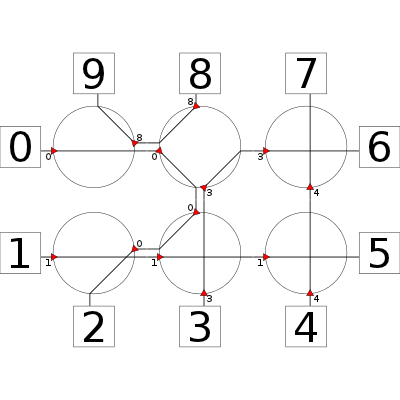
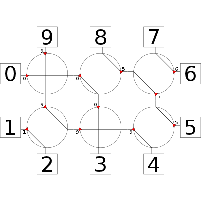
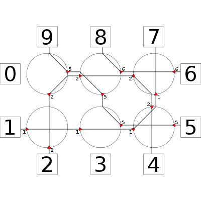
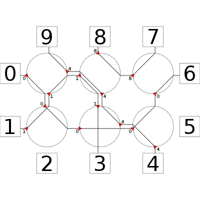
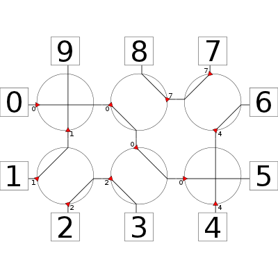
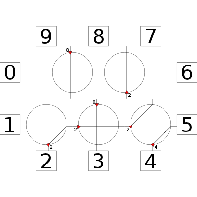
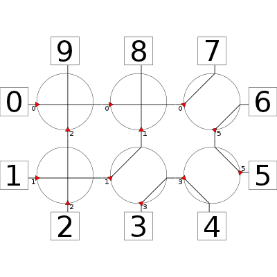
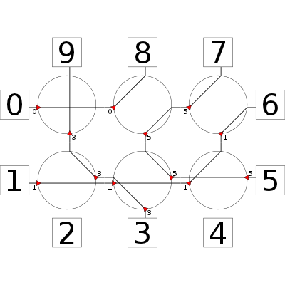
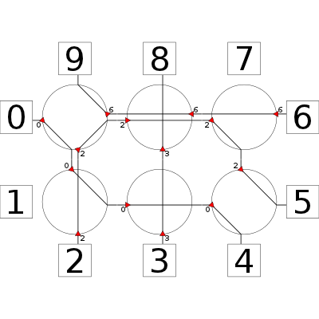
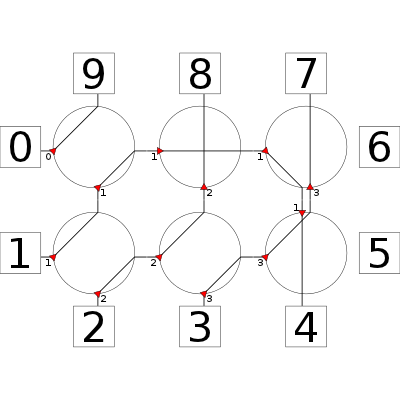
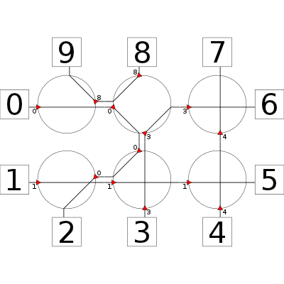
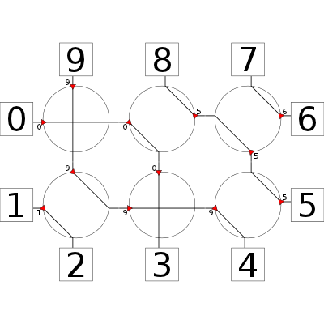
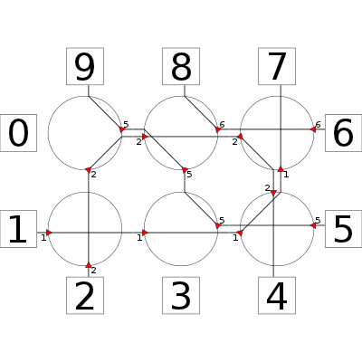
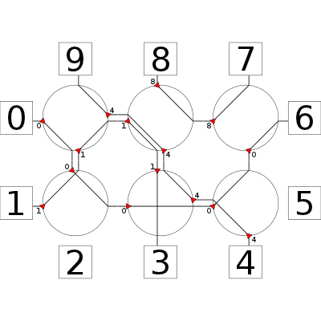
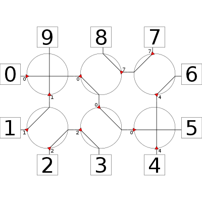
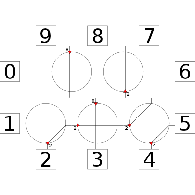
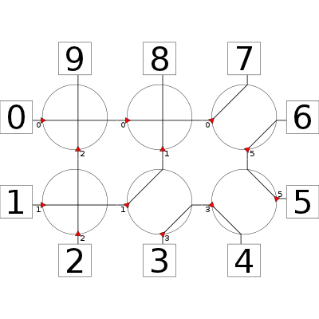
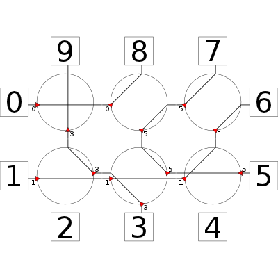
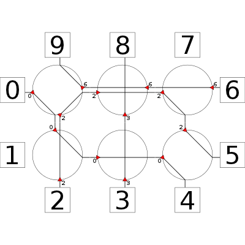
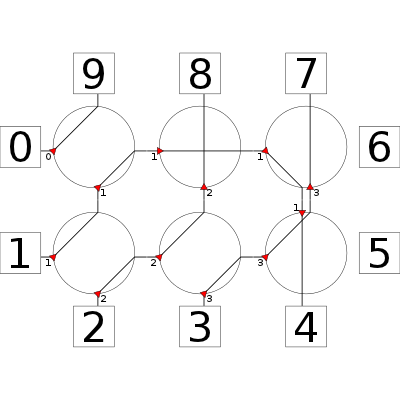